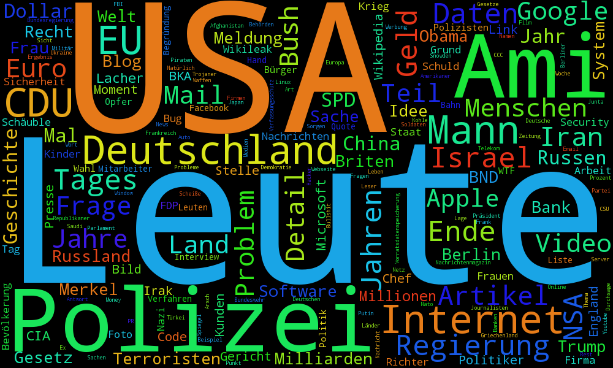
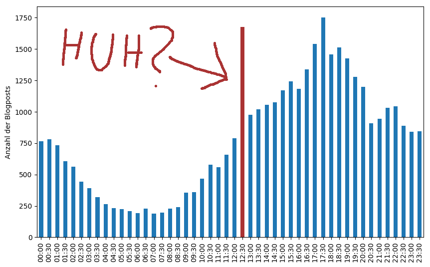
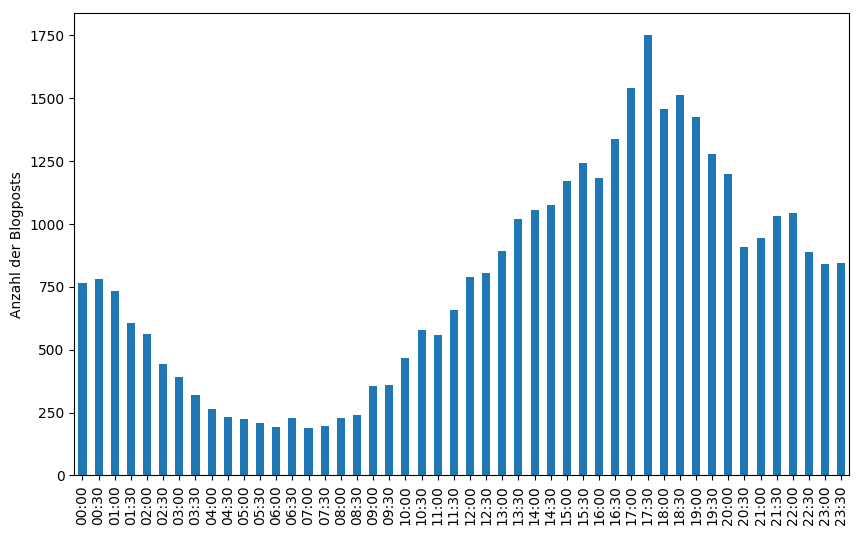
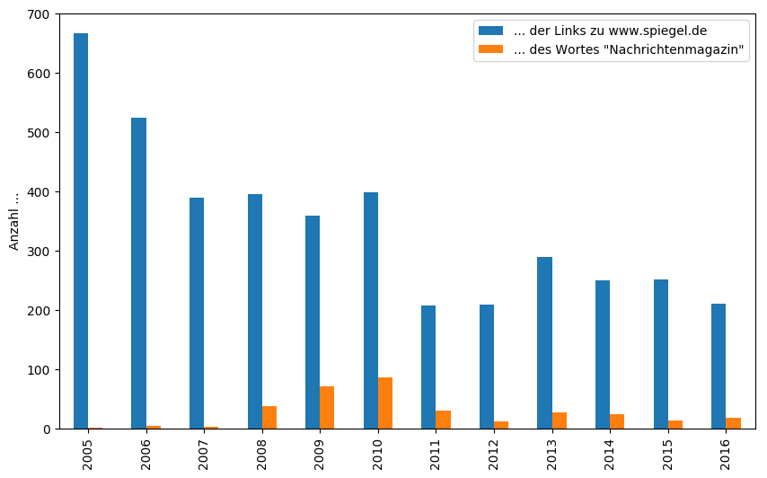
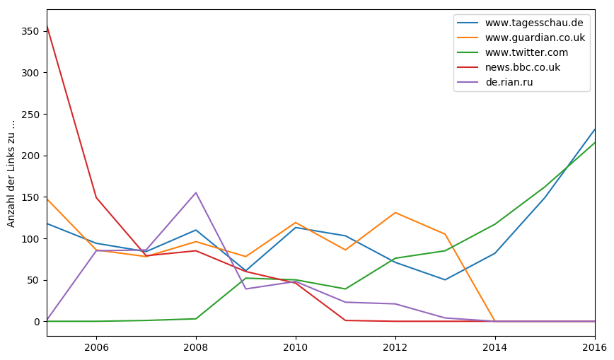
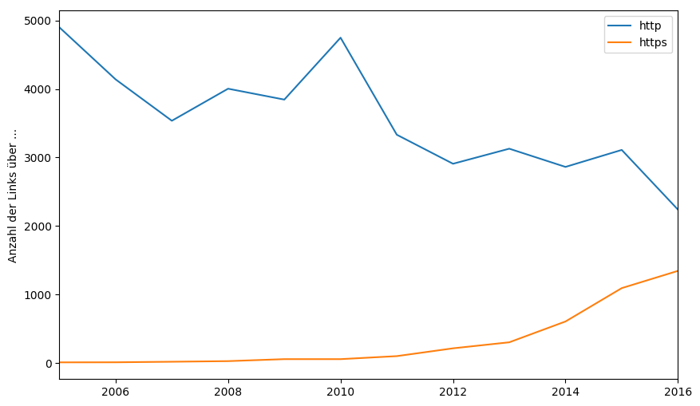
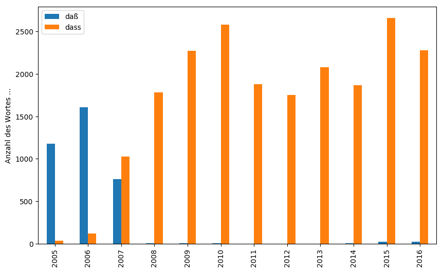
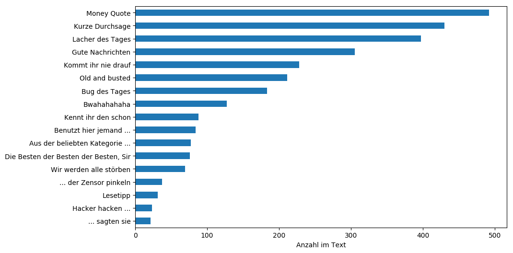

12 Jahre Fefes Blog - eine "Small Data" Analyse
von Felix Bolte, 15.03.2017
Angefangen als Sammelsurium von teilenswerten Links, schnellte die Beliebtheit des Blogs rasant in die Höhe. Zwar weiß niemand genau wer und wenn ja wie viele sich hier rumtummeln, doch wahrscheinlich ist es genau dieser Charme (schlicht, kommentarfrei), den die Leute zu schätzen wissen. Diesen Monat, exakterweise am 31. März 2017⤴ wird Fefe nun das Dutzend vollmachen. Aber was bleibt dem Fefe-Leser eigentlich nach der abendlichen Lektüre außer einem Gefühl, von schlechten Nachrichten umzingelt zu sein? Zeit sich einmal anzuschauen, was man anhand der Unmengen von Posts über die Jahre alles herausfinden kann!
Als Ausgangspunkt dieses Textes stand der wirklich sehenswerte Vortrag⤴ von David Kriesel⤴ mit dem Titel "SpiegelMining". Mhhh, das sollte doch auch für Fefes Blog möglich sein, oder? Also, was brauchen wir? Erstmal alle Einträge downloaden (check⤴). So und nun? Fefe liebt und lebt Datensparsamkeit - was können wir denn jetzt überhaupt für Merkmale in diesen kurzen Texthäppchen entdecken? Wir finden ja auf Anhieb nicht einmal einen Veröffentlichungszeitpunkt, jedenfalls nicht im HTML Code. Zum Glück spuckt der HTTP Header "Last-Modified" die für uns sehr wichtige Uhrzeit aus. Übrigens, die Blogpost-ID korreliert mit dem Datum - Näheres dazu hier⤴.
Alle anderen Merkmale, die es z.B. bei SPON gibt (Autor, Ressort, Schlagwörter, Kommentare), fallen bei Fefe leider weg. Wir müssen uns wohl mit dem eigentlichen Text zufriedengeben. Nun ja, nicht ganz, denn der Text enthält zusätzlich Links, Updates, Zitate und eingebettete Medien (ja richtig, das gabs früher⤴ mal!). Auf gehts zur Auswertung⤴ der Daten!
Zuallererst die nackten Zahlen aus dem Zeitraum vom 31.03.2005 bis zum 28.02.2017 (ohne Hidden Track⤴):
| Summe | pro Tag (ø) | pro Post (ø) | pro Tag (max) | pro Post (max) | |
|---|---|---|---|---|---|
| Posts | 37987 | 8,73 | - | 53 (31.03.2015) | - |
| Updates | 4513 | 1,04 | 0,12 | 29 (12.09.2009) | 27 (12.09.2009⤴) |
| Zitate | 13430 | 3,09 | 0,35 | 54 (31.03.2015) | 25 (20.10.2011⤴) |
| Links | 49418 | 11,35 | 1,30 | 76 (01.10.2010) | 47 (09.06.2010⤴) |
| Textlängen (in Zeichen) |
19206831 | 4412,32 | 505,62 | 74526 (31.03.2015) | 16937 (02.01.2013⤴) |
Schauen wir uns nun genauer an, zu welchen Uhrzeiten Fefe gerne postet:
Hui, eine schöne sinusartige Kurve - Fefe scheint also einen geregelten Tagesablauf zu haben! Auffällig jedoch ist der Peak um 12:30 Uhr. Mhhh, kurz in die Rohdaten geschaut, und tatsächlich, Anfang 2005, also damals, als der Blog gestartet wurde, haben nämlich alle Blogposts einen Zeitstempel im Sekundenabstand zueinander - bis zum 01.07.2005. Was ist an diesem Tag passiert? Fefe hat seine selbstgehackte⤴ Blogsoftware deployed⤴ und das System mit den alten Daten gefüttert. Anscheinend hat er dabei die Zeitstempel der ersten drei Monate "gefaked"! Wenn wir diesen Zeitraum herausrechnen, bekommen wir folgendes Bild:
Den kleinen Einbruch nach 20 Uhr kann ja jeder für sich selbst interpretieren ;). Nun gut, lassen wir Fefes Posting-Aktivität mal beiseite und widmen uns seinen gesetzten Links. Ganze 2409 davon (~ 5%) sind interne Links (blog.fefe.de). Die externen Links setzen sich wie folgt zusammen (alle über 100 Verweise):
| Domain | Anzahl der Links |
|---|---|
| www.spiegel.de | 4151 |
| www.heise.de | 2791 |
| www.tagesschau.de | 1266 |
| www.youtube.com | 1080 |
| www.guardian.co.uk | 927 |
| www.twitter.com | 800 |
| news.bbc.co.uk | 778 |
| de.wikipedia.org | 776 |
| www.nytimes.com | 679 |
| en.wikipedia.org | 605 |
| www.tagesspiegel.de | 551 |
| www.zeit.de | 508 |
| www.faz.net | 485 |
| de.rian.ru | 462 |
| www.washingtonpost.com | 395 |
| ptrace.fefe.de | 387 |
| www.taz.de | 387 |
| www.theguardian.com | 376 |
| www.sueddeutsche.de | 368 |
| www.welt.de | 365 |
| news.yahoo.com | 359 |
| www.reuters.com | 319 |
| www.bbc.co.uk | 303 |
| www.netzpolitik.org | 293 |
| www.sz.de | 282 |
| www.rt.com | 252 |
| www.telegraph.co.uk | 252 |
| www.bloomberg.com | 226 |
| www.golem.de | 223 |
| www.theregister.co.uk | 221 |
| www.wired.com | 213 |
| www.cnn.com | 198 |
| www.derstandard.at | 186 |
| www.bbc.com | 174 |
| www.independent.co.uk | 171 |
| www.theinquirer.net | 160 |
| www.arstechnica.com | 155 |
| www.google.com | 150 |
| www.fr-online.de | 148 |
| www.focus.de | 144 |
| www.rawstory.com | 141 |
| www.timesonline.co.uk | 137 |
| edition.cnn.com | 133 |
| www.n-tv.de | 132 |
| www.dailymail.co.uk | 127 |
| www.tagesanzeiger.ch | 122 |
| www.ftd.de | 121 |
| www.haaretz.com | 119 |
| www.stern.de | 116 |
| www.alternativlos.org | 113 |
| www.lawblog.de | 112 |
| www.heute.de | 110 |
| www.huffingtonpost.com | 107 |
| pbs.twimg.com | 106 |
| abcnews.go.com | 101 |
| www.torrentfreak.com | 100 |
Wow, das hätte ich jetzt nicht erwartet. Fefe ist ja ein richtiger SPON Fanboy! Mehr als jeder zwölfte Link geht zum Spiegel, d.h. im Durchschnitt ca. einer pro Tag. Dabei bezeichnet er dieses Medium doch immer als "ehemaliges Nachrichtenmagazin". Schauen wir doch mal, wie sich das über die Zeit verhält:
Ok ok, der Trend geht eindeutig nach unten. Zwischen 2010 und 2011 scheint ein gewisser Knackpunkt zu liegen, denn dort benutzt er seinen Kampfbegriff relativ häufig. Schauen wir uns mal andere Nachrichtenseiten über die Zeit an:
Wo die Zahlen für Twitter und Tagesschau in den letzten Jahren stiegen, fielen die anderen abrupt auf Null. Wie kommt das? Nun, beim Guardian und der BBC haben sich die Domains geändert. RIA Novosti (de.rian.ru) hingegen ging am Ende in Sputnik News auf. Wenn man also ein akkurates Bild zeichnen möchte, müsste man eigentlich die alten und neuen Domains zusammenzählen.
Jetzt die spannende Frage, HTTP oder HTTPS? Let's Encrypt hat ja im letzten Jahr enorm viel Zertifikate ausgestellt⤴. Und tatsächlich, dieser Trend spiegelt sich auch in Fefes externen Links wider. Wenn das so weiter geht, haben wir dieses Jahr Break-even. Yay!
Nochmal kurz zu den internen Links - von den 2409 verweisen 2277 direkt auf einzelne Blogposts. Es gibt 5 Paare die sich jeweils gegenseitig referenzieren und es gibt sogar einen Eintrag der sich selbst verlinkt⤴. Übrigens, die längste interne Referenzkette hat eine Tiefe von 5 Links⤴ und dreht sich um das Thema "Mohn".
Sieht man eigentlich im Nachhinein noch, was Fefe so verlinkt? Einige der Links führen ja schon des Öfteren ins digitale Nirvana (TODO: Halbwertzeit des Internets berechnen), aber wir können ja die URLs nach "Dateitypen" durchforsten und sortieren:
| Dateityp | Summe |
|---|---|
| Webseiten (html, php, do, stm, htm, aspx, asp, shtml, cfm, ece, story, jsp, jhtml, cgi, php3) | 21195 |
| Bilder (jpg, png, jpeg, gif) | 1157 |
| Dokumente (pdf, txt, xml) | 705 |
| Media (mp3, mp4) | 34 |
Was kann man noch aufregendes feststellen wenn man sich nur den Text anschaut? Z.B. gibt es ganze 1177 Posts, die ohne Links, Medien und Zitaten daherkommen. Vielleicht sind das Fefes eigene Denkanstöße, vielleicht hat er aber auch nur vergessen Links zu setzen - wer weiß!?
Wie man schon im ersten Bild ganz oben sehen konnte, um welche Themen sich Fefes Blog dreht, hat hier⤴ mal jemand geschaut, wie verwandt die Themen untereinander sind bzw. "worüber Fefe lacht".
Neue Rechtschreibung! Alte Rechtschreibung?
Zum Schluss eine Liste der Floskeln bzw. Memes nach Häufigkeit (da fehlen bestimmt noch ein Paar!):
